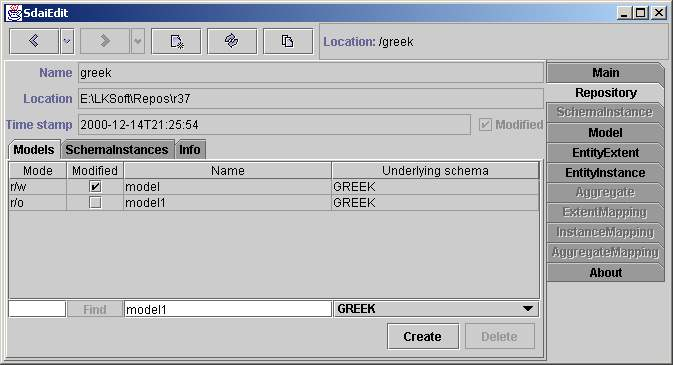
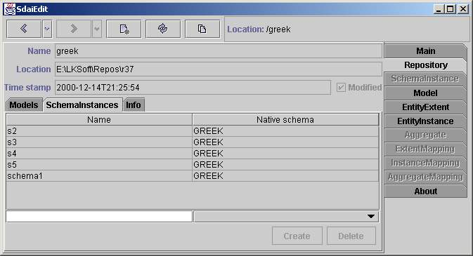
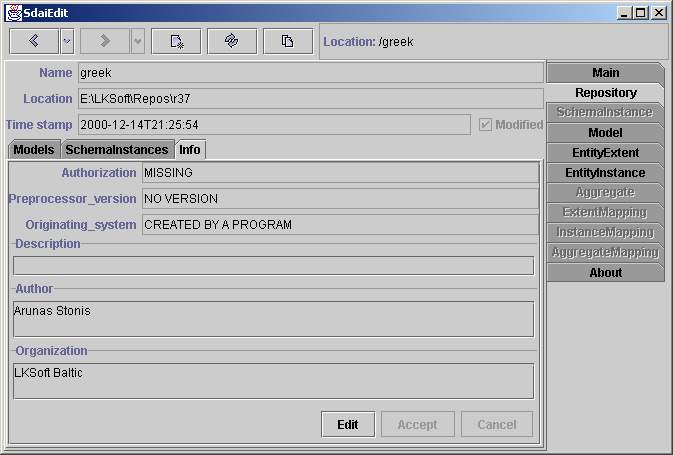

Repository Page
This page shows the content of a
repository. The name and the actual location
(local or remote) is given in the upper part, followed by three sub
tabs
for containing Models, Schema Instances and the Repository Info.
Models

The Models tab shows available models
in this repository.
Table
The table consists of four columns:
Mode, Modified, Name and Underlying Schema.
Mode shows current access rights to the model. Available values are:
- '-'
which means no access,
- 'r/o' - read only access,
- 'r/w' read write access.
You can change model access by clicking on the cell and select
preferred
one from the list. Usually there is no reason to change a model access
becausethe model is automatically
switched to the read only access when you open it and is switched to
the read write
access when you edit data in the model.
Modified column contains a check
box. If it is selected it means the model is modified otherwise not.
When you
commit or abort transaction (see
main page)
this flag
will be changed.
Name and
Underlying Schema columns contain model
names and underlying schema names of the model underlying schemas.
Editing Line and Buttons
Editing line also have four fields
which are coupled with columns of the above table.
The first
text field and Find button are
made for jumping to instances by their persistent
labels. Enter the instance number (with or without '#') into the field
and press 'Find' button or 'Enter' key, then you will jump to the
specified instance if such exists.
Next two fields are used to create a model. Enter an applicable name of
the model and choose
one of available underlying schemes from the combobox situated next to
the field. Press 'Create' button to create a model and you will
automatically jump to this model.
You can delete the selected model from the table by pressing 'Delete'
button.
Schema Instances

The schema instances tab shows all
available schema instance in the repository.
Table
Table have two columns where first one
represents a Name of the
schema instance and the second
- a name of the Native schema.
Editing line and Buttons
There are two fields associated with
the table columns above. They are used to create
new schema instances. Enter a name of the schema into the field and
choose a native schema from the combo box next to the field.Press
'Create' button to
create an instance. If you want to delete schema instance you need to
select the preferred
one in the table and press 'Delete' button.
Info

The repository Info tab shows
information which is also available in a STEP
File (part-21) header. Information can be modified when switching into Edit
mode. Changes are accepted by Accept button or ignored with
Cancel button.